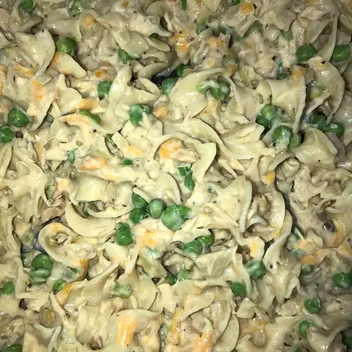

Quick Tuna Casserole
This Quick and Easy Tuna Casserole is Perfect For Any Busy Family

Ingredients
- 1 (12 ounce) package egg noodles
- 2 cups frozen green peas
- 2 (10.75 ounce) cans condensed cream of mushroom soup
- 2 (5 ounce) cans tuna, drained
- 10 slices American processed cheese
- 1 onion, chopped
- ground black pepper to taste
Directions
- Gather all ingredients.
- Bring a large pot of water to a boil. Add noodles and frozen peas; simmer for 8 to 10 minutes,
or until noodles are al dente. Drain well, then return noodles and peas to the pot.
- Stir in condensed soup, tuna, cheese, onion, and pepper until well mixed and the cheese has
melted. Serve.
- Serve hot and enjoy!